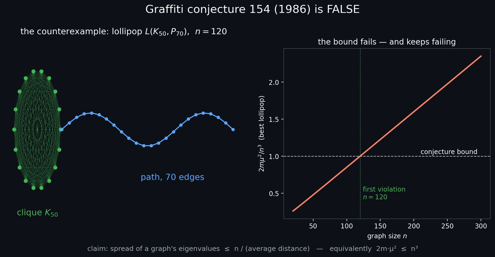
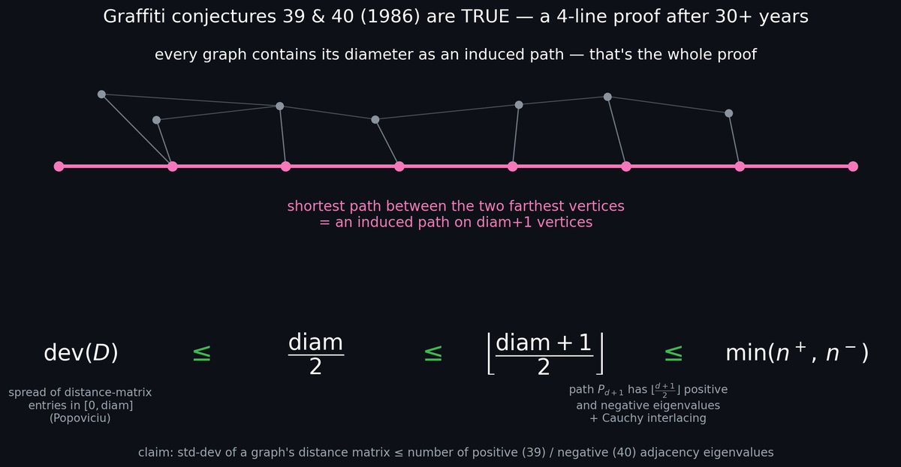
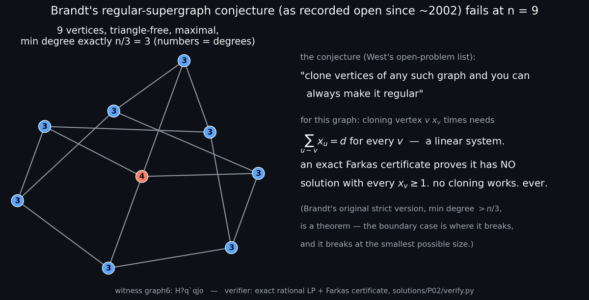

Proud to say that Devin has cracked three more unsolved problems today:
- REFUTED: Graffiti Conjecture 154 (open for ~40 years)
- PROVED: Graffiti Conjectures 39 & 40 (~40 years)
- REFUTED: Brandt's Regular Supergraph Problem from West's open problems list (~20 years)
My methodology is explained below, but basically I showed Devin the original tweet — Dmitry Rybin's refutation of the Dinitz–Garg–Goemans conjecture, a graph theory problem open for ~30 years — and told it to find similar problems and crack them.
The flood gates are open.
The results
1. Graffiti Conjecture 154 (1986) is false
The conjecture claimed that the spread of a graph's eigenvalues is at most n / (average distance) — equivalently, 2m·μ² ≤ n³. The counterexample is a lollipop graph L(K50, P70) on n = 120 vertices: a clique of 50 vertices with a 70-edge path attached. The bound first fails at n = 120 — and keeps failing as n grows.

2. Graffiti Conjectures 39 & 40 (1986) are true — a 4-line proof after 30+ years
These claimed that the standard deviation of a graph's distance matrix is at most the number of positive (39) / negative (40) adjacency eigenvalues. The whole proof: every graph contains its diameter as an induced path — the shortest path between the two farthest vertices is an induced path on diam+1 vertices. Then dev(D) ≤ diam/2 (Popoviciu) ≤ ⌊(diam+1)/2⌋ ≤ min(n⁺, n⁻), since Pd+1 has ⌊(d+1)/2⌋ positive and negative eigenvalues, plus Cauchy interlacing.

3. Brandt's regular-supergraph conjecture fails at n = 9
As recorded open since ~2002 on West's open-problem list, the conjecture said you can clone vertices of any maximal triangle-free graph with min degree n/3 and always make it regular. There's a 9-vertex witness where an exact Farkas certificate (exact rational LP) proves the cloning system has no solution with every xv ≥ 1 — no cloning works, ever. Brandt's original strict version (min degree > n/3) is a theorem; the boundary case is where it breaks, at the smallest possible size.

Methodology
Everything lives in the open repo: github.com/jzone3/solving-math-problems. The short version:
- Each curated open problem gets 5 parallel Devin sessions, one per prompt variant: direct counterexample search, structured construction, SAT/SMT encoding, LP/ILP duality gap, and literature-first reasoning. Varying the attack framing means at least one session usually avoids the local minima the others fall into.
- Any claimed result must ship a standalone verifier script that independently checks the witness — never trust the LLM's arithmetic; every bound and witness is machine-verified.
- A problem only counts as solved after a second, differently-written verifier agrees, the statement is checked word-by-word against the original source (to avoid solving a paraphrase), and a literature search confirms nobody resolved it first.
How it actually went down
I recorded a video walking through the whole process — here's the story.
The opening prompt was embarrassingly simple: "Find open math problems that we can solve like this together", with Dmitry's tweet pasted in. Devin curated a list of similar open problems, I made a public GitHub repo, told it to put the plan there, and gave it two instructions: run everything in ultra mode (the best models), and run each problem five times with slightly different prompts — harness the entropy, so if one framing gets stuck in a local minimum, another might not. Then I said "don't need my review on any of this, just start cooking" and left to get a haircut.
By the time I was back, the master session had spun up wave after wave of child sessions — 15, then 30, then 45, well over a hundred over the course of the run — all sandboxed, all working in parallel, with the master agent checking in on the children and nudging the stuck ones ("don't stop, try a different attack"). I asked it to produce a graphic and a bite-size explanation for every solution, because I'm an EECS grad, not a math professor, and I needed the results in a form I could sanity-check.
Verification got stricter as it went: on advice from the actual mathematicians at Cognition, every
result also gets a Lean formalization — no sorry, no cheating — on top of the
adversarial verifier scripts, so the proofs have to compile, not just sound convincing. Devin even ranked
each result on a Richter scale of earth-shattering-ness (verdict: cool and genuinely open, but not
earth-shattering — yet).
Two honest caveats. First, about 30 minutes after I posted, someone on my team found a GitHub repo where one of the problems had already been solved a month earlier — the literature check is now part of the pipeline for exactly this reason. Second, there's a fair debate about who deserves credit: the models (Fable, GPT-5.6-Sol) are doing the heavy lifting, and yes, this is "just" prompt/harness engineering. But I had two meetings and a haircut during that run. I would never have left a CLI running on my laptop for days. A cloud agent that keeps cooking while you live your life is the difference between "someone could do this in principle" and it actually getting done.
And the run hasn't stopped — since the original post, the sessions have settled several more problems. Follow-ups coming.
If you're a mathematician who wants to crank through unsolved problems like this, I'm looking for a fellow to help. We're building cool stuff at Cognition — hit me up.